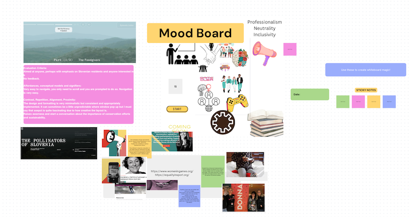

IL Activity 8
https://emergencemagazine.org/feature/pollinators-of-slovenia/
Pollinators of Slovenia - chosen due to educational and infromative narrative for social/environmental justice/activism
What is the audio used for: sound effects, ambient sound, background music, speech?
This is an extremely unique way of spreading awareness. Despite it being a documentary, choosing an interactive and creative narration approach definitely enhances the main aim of documentaries, its memorability and impact. They use audio to narrate a documentary split into episodes. Speech, sound effects are also parts of the audio effects.
Can you find evidence of audio used with intent, which enhances information comprehension, retention and appeal?
All of it is used with intent. However, they used sound effects to set the issue into context and 'materialise' the seevrity of the isssue by realistic and real-life sound effects. They also bring in people and interview them to bring in emotional appeal through story-telling.
What advantages and caveats of audio use can you witness?
There is extended accessibility. They even allow captions.
The only downside I can find is that due to the liberal nature of how you go about viewing the images whilst listening to the audio, you might find yourself behind or ahead on the episode when it comes to matching the audio with the visuals.
How is audio combined with other media (images, text, video) in order to enhance a multimedia production?
They cover every basis. From videos (shots of landscapes), photographs, speech (narration, interviews, sound effects) to captions, they make it a truly immersive experience.
Evaluation Criteria:
Understanding your audience:
Can you tell who the project is aimed at?
Anyone, perhaps with emphasis on Slovenian residents and anyone interested in biology.
Does the range and depth of material seem appropriate for the topic and audience?
Yes, infromative, educational with practical real-life examples. It is almost a piece of academia content with the research on conservation.
Does the project provide any means of feedback or interaction?
No, it is more of a piece of art or entertainment. There are credits but not any way to contact anyone.
Affordances, conceptual models and signifiers:
How easy or complex is the project to use/navigate?
Very easy, you only need to scroll and you are prompted to do so. Navigation is very easy.
Can you tell where you have been, where you are and where you can go?
Yes, with the episode index, titles and the time bar, I did not find myself struggling with that.
How does the site use images, text, sound and moving images - are they just illustration or something more?
It is essentially a whole movie but instead of only video, they use photos and shorter video clips.
Contrast, Repetition, Alignment, Proximity:
Does it make effective use of layout? For example: the positioning of information; does the background image or colour enhance the presentation of information; are the foreground and/or text colours contrasted sufficiently?
The design and formatting is very minimalistic but consistent and appropriately implemented. It can sometimes be a little unpredictable where window pop up but I must say that asepct is quite fascinating due to how creative the layout is.
Does it use symmetry and balance to good effect?
Yes, the only expetions is the credits popping up from the bottom.
Is the information, navigation, graphics etc. laid out in a consistent way?
Yes, despite the uncoventional layout, there is consistency and a system to the structure.
Benefits for interaction, experience, social change?
A documentary is one of the best ways to get people thinking more about issues, even those who might not be as interested in for example environmental activism. Everyone consumes films and if not films, then websites.
What is the purpose of the project?
Raise awarness and start a conversation about the importance of conservation efforts and sustainability.

Lab task:
Task 1:
Analysis:
Whilst audio can be a great accessibility feature or a way to interact with or captivate the user, I belive it to be one of the media types I might not get as much use out of. Whilst I may be able to add in some fun sound effcets, it might not be appropriate for the severity of the issue and the aim of the website. These two sound effect could be fun to add to a more light-hearted website or a video game. The birds chirping could be a great wayb to welcome the user to a narrative and immerse them in the experince and atmosphere. The applause could be added at the end as they complete a certain task. I belive that video and audio sources might not be able to fit my project unless I find real-life evidence in these formats.